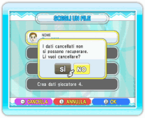

10 |
Salvare i dati |
 |

Entrambi i giochi salveranno automaticamente i dati ogni volta che concludi un livello, finisci una sfida o modifichi le impostazioni. Tuttavia, i risultati e le impostazioni non verranno salvati nelle Sfide Wi-Fi con amici (vedi la sezione relativa alla Sfida Wi-Fi di Dr. Mario). Per cancellare un file con dei dati di gioco, seleziona un giocatore dallo schermo di selezione del personaggio e premi Nota: se viene cancellato un Mii di un giocatore dal Canale Mii, l’icona e i dati del giocatore rimarranno nel gioco.
|
 , poi seleziona SÌ per confermare. I dati cancellati non potranno più essere recuperati.
, poi seleziona SÌ per confermare. I dati cancellati non potranno più essere recuperati. |
 |
 |